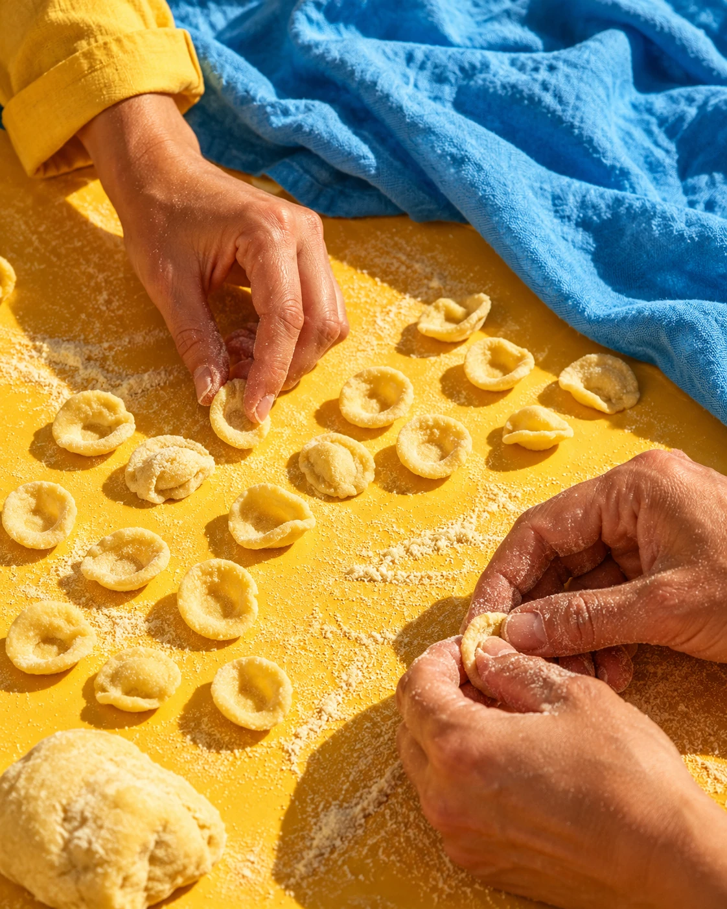
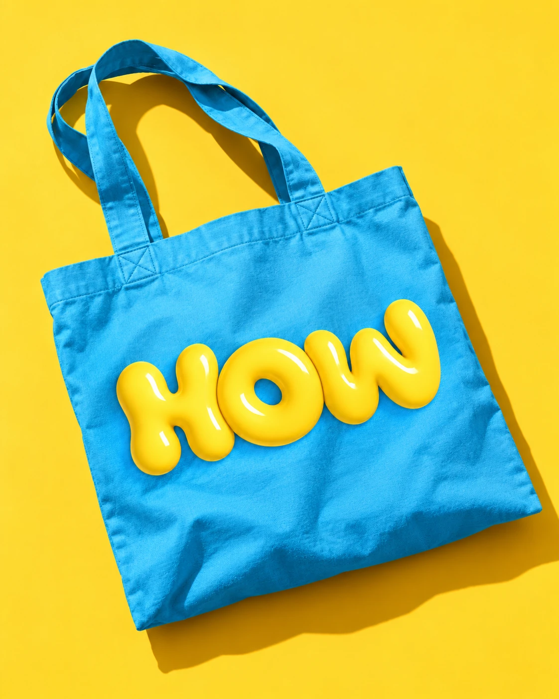

01 / A LITTLE HISTORY, A LITTLE FLOUR
Every shape
has a story
Discover the story of fresh pasta and the traditions behind what you’re about to make
Learn how to balance your flour blend and water — the starting point for a good dough
HANDS-ON EXPERIENCES · LECCE, ITALY
Some places stay with you
This one gets on your hands
THE FEELING
A place feels different when you become part of it
HOW brings you into local culture, one experience at a time — starting with fresh pasta made entirely by hand
Join chef Luigi Hasanaj at I LATINI in Lecce, and meet Salento through something you make with your own hands
THE MAKING
Follow the journey from simple ingredients to your own fresh pasta

01 / A LITTLE HISTORY, A LITTLE FLOUR
Discover the story of fresh pasta and the traditions behind what you’re about to make
Learn how to balance your flour blend and water — the starting point for a good dough
02 / FEEL THE DIFFERENCE
Mix your ingredients and knead the dough by hand with chef Luigi Hasanaj
Get to know the texture and the gestures that bring flour and water together
03 / SMALL SHAPES, LOCAL STORIES
Shape orecchiette and maccheroncino salentino using traditional hand techniques
Make each piece yourself, one gesture at a time
04 / BRING IT ALL TOGETHER
Prepare a base sauce and learn how to cook your fresh pasta
Finish it in the sauce with the right mantecatura technique, before the final finger food tasting
THE MEMORIES
A little more than a memory
Your €60 experience includes the final finger food tasting, a complimentary gift bag, course booklet and products, and a participation certificate
Make it part of your trip
YOURS TO KEEP
And the know-how to make it again
SAME PLACE, NEW PERSPECTIVE
I LATINI
Via Giuseppe Palmieri 46
Lecce, Salento, Italy
A FEW THINGS TO KNOW
We start with flour, water and dough, then guide you through the techniques for shaping the pasta by hand
The entire class is held in English
Handmade orecchiette and maccheroncino salentino, plus a base sauce and the techniques for cooking and finishing pasta in the sauce
€60 per person, including the class, final finger food tasting, a complimentary gift bag, course booklet and products, and a participation certificate
Choose your preferred date and number of participants, then continue on WhatsApp to check class times and availability with HOW
A calendar selection is a request — your place is confirmed in the WhatsApp chat
Tell us about any allergies or dietary requirements when you contact us on WhatsApp, before confirming your place
YOUR TURN
Choose a date and your group size
Continue on WhatsApp to check availability and confirm your place
CHOOSE YOUR PREFERRED DATE
Select a preferred date — availability and class times are confirmed on WhatsApp
HOW TO MAKE PASTA
WhatsApp bookings will be available here soon
Your place is confirmed in the WhatsApp chat
Selecting a date does not reserve a place